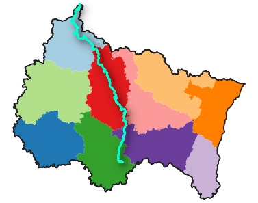
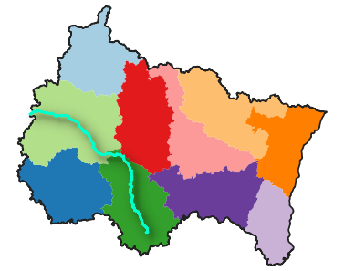
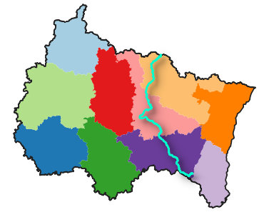

La Meuse, qui prend sa source en Haute-Marne, parcourt 494 km dans la région Grand-Est.
La Marne, qui prend ella aussi sa source en Haute-Marne, parcourt 336 km dans la région Grand-Est.
La Moselle, qui prend sa source dans les Vosges, parcourt 315 km dans la région Grand-Est.